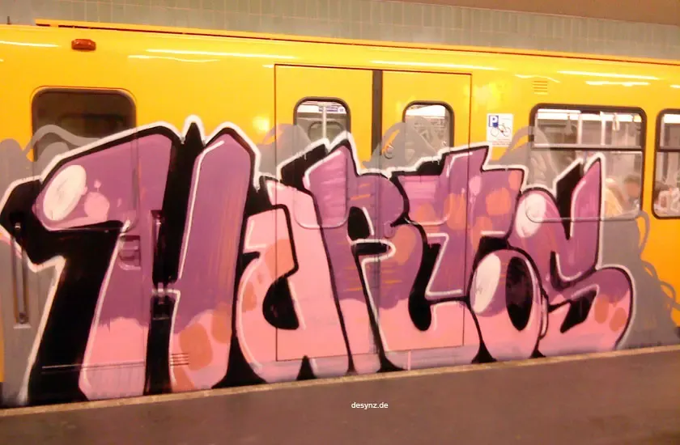

Hurtos / Victor Rutty
Writer & MC · Burgos / Madrid
Historia
Hurtos, ahora conocido como Victor Rutty, fue un graffitero de Burgos que tuvo un gran papel en el desarrollo de la escena urbana madrileña. Comenzó como todo el mundo, haciendo piezas y takeos por su barrio, y rápidamente empezó a moverse por barrios e incluso provincias de alrededor, ganándose un nombre como artista callejero.
Al poco tiempo comenzó a pintar trenes, siendo uno de los treneros más prolíficos y reconocidos del país. A su vez comenzó a rapear, usando su firma como alias. En sus letras de esta época hablaba principalmente de graffiti, trenes y de cómo él rechazaba la vida que llevaban la gran mayoría de raperos, llena de excesos y fiesta, para simplemente pasar los días enteros pintando trenes y muros con su grupo. Aquí se formó el grupo The Louk, grupo de rap y graffiti muy reconocido dentro de los parques de principios del 2010.
A día de hoy está retirado del graffiti, pero sigue rapeando. Cambió su alias a Victor Rutty y sus canciones mantienen los temas del pasado pero desde una perspectiva más experta. Se ha caracterizado por hacer grandes EPs con Rober del Pyro —también integrante de The Louk— y colaboraciones con grandes exponentes como Ill Pekeño, Ergo Pro o Beny Jr.